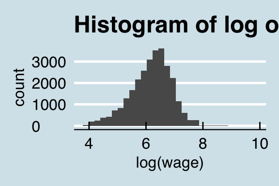

Chapter 1 Modern Statistical Workflow
This session introduces the process I recommend for model building, which I call “Modern Statistical Workflow”.
1.1 Modern Statistical Workflow
The workflow described here is a template for all the models that will be discussed during the course. If you work by it, you will learn models more thoroughly, spot errors more swiftly, and build a much better understanding of economics and statistics than you would under a less rigorous workflow.
The workflow is iterative. Typically we start with the simplest possible model, working through each step in the process. Only once we have done each step do we add richness to the model. Building models up like this in an iterative way will mean that you always have a working version of a model to fall back on. The process is:
- Write out a full probability model. This involves specifying the joint distribution for your parameters/latent variables and the conditional distribution for the outcome data.
- Simulate some data from the model with assumed values for the parameters (these might be quite different from the “true” parameter values).
- Estimate the model using the simulated data. Check that your model can recover the known parameters used to simulate the data.
- Estimate the model parameters conditioned on real data.
- Check that the estimation has run properly.
- Run posterior predictive checking/time series cross validation to evaluate model fit.
- Perform predictive inference.
Iterate the entire process to improve the model! Compare models—which model are the observed outcomes more plausibly drawn from?
1.1.1 Example: A model of wages
Before building any model, it is always worth writing down the questions that we might want to ask. Sometimes, the questions will be relativey simple, like “what is the difference in average wages between men and women?” Yet for most large-scale modeling tasks we want to build models capable of answering many questions. In the case of wages, they may be questions like:
- If I know someone is male and lives in the South what should I expect their wages to be, holding other personal characteristics constant?
- How much does education affect wages?
- Workers with more work experience tend to earn higher wages. How does this effect vary across demographic groups?
- Does variance in wages differ across demographic groups?
As a good rule of thumb, the more questions you want a model to be able to answer, the more complex the model will have to be. The first question above might be answered with a simple linear regression model, the second, a more elaborate model that allows the relationship between experience and wages to vary across demographic groups; the final question might involve modeling the variance of the wage distribution, not just its mean.
The example given below introduces a simple linear model of wages given demographic characteristics, with the intent of introducing instrumental variables—the first trick up our sleeve for the day. We’ll introduce two competing instrumental variables models: the first assuming independence between the first and second stage regressions and the second modeling them jointly.
Let’s walk through each step of the workflow, gradually introducing Stan along the way. While we’re not going to estimate the model on real data, we want to make sure that the model we build is sane. As such we’ll look at the characteristics of wages for some real data. This data comes from some wage and demographics data from the 1988 Current Population Survey, which comes in R’s AER package. This dataset contains the weekly wage for around 28,000 working men in 1988; prices are in 1992 dollars. You can load the dataset into your R workspace like so:
library(AER)
data("CPS1988")1.1.2 Step 1: Writing out the probability model
The first step of of our workflow is to propose an underlying generative model. It’s helpful to think of a generative model as being a structured random number generator, which when simulated, generates outcomes with a distribution that looks like the distribution of the outcome variable. Once we have decided on the generative model, we then get into the specifics of endogeneity issues etc. In deciding the choice of distribution to use, you should plot a histogram or density of the outcome. For example, we could generate a histogram of wages like so:
library(ggplot2)
ggplot(CPS1988, aes(x = log(wage))) +
geom_histogram() +
ggthemes::theme_economist(base_size = 12) +
ggtitle("Histogram of log of wages")
As we can see, the distribution of wages is quite skewed, and so we might need to choose a distribution capable of generating highly skewed outcomes. Another approach is to transform the data. In this case, because all wages are positive, we could take their natural log. The distribution of log wages appears to be far more normal than the initial distribution, and it possible that the non-normality is explainable using demographic characteristics.
ggplot(CPS1988, aes(x = log(wage))) +
geom_histogram() +
ggthemes::theme_economist(base_size = 12) +
ggtitle("Histogram of log of wages")
If we decide to choose a normal density as the data-generating process, and assume that the conditional distribution of one person’s wage does not depend on the conditional distribution of another person’s, we can write it out like so:
\[ \log(\mbox{wage})_{i} \sim \mbox{Normal}(\mu_{i}, \sigma_{i}) \]
which says that a person \(i\)’s wage is distributed according to a normal distribution with location \(\mu_{i}\) and scale \(\sigma_{i}\). In the case of a normal density, the location is the mean, and the scale is the standard deviation. We prefer to use “location” and “scale” rather than “mean” and “standard deviation” because the terminology can carry across to other densities whose location and scale parameters don’t correspond to the mean or standard deviation.
Let’s be clear about what this means. This generative model says that each individual’s (log) wage is not completely determined—it involves some amount of luck. So while on average it will be \(\mu_{i}\), luck will result in differences from this average, and these differences have a standard deviation of \(\sigma_{i}\).
Notice that both parameters \(\mu_{i}\) and \(\sigma_{i}\) vary across each individual. One of the main challenges of building a good model is to come up with functional forms for \(\mu_{i}\) and \(\sigma_{i}\), taking into account the information available to us. For instance, the (normal) linear regression model uses a (row) vector of individual characteristics \(X_{i} = (\mbox{education}_{i},\mbox{experience}_{i}, \dots)\), along with a set of parameters that are common to all individuals (an intercept \(\alpha\), coefficients \(\beta\) and a scale parameter \(\sigma\)). The generative model is then:
\[ \log(\mbox{wage})_{i} \sim \mbox{Normal}(\alpha + X_{i}\beta, \sigma) \] which is the same as saying:
\[ \log(\mbox{wage})_{i} = \alpha + X_{i}\beta + \epsilon_{i} \mbox{ with } \epsilon_{i} \sim \mbox{N}(0, \sigma) \]
Note that we’ve made “modeling assumptions” \(\mu_{i} = \alpha + X_{i}\beta\) and \(\sigma_{i} = \sigma\). The parameters of the generative model are both “true” and unknown. The entire point is to peform inference in order to get probabilistic estimates of the “true” parameters.
1.1.2.1 Choosing the right generative model
Above, we picked out a normal density for log wages (which corresponds to a lognormal density for wages) as a reasonable first step in modeling our wage series. How did we get to this choice? The choice of distribution to use should depend on the nature of your outcome variables. Two good rules of thumb are:
- The chosen distribution should not give positive probability to impossible outcomes. For example, wages can’t be negative, and so if we were to use a normal density (which gives positive probability to all outcomes) to model wages, we would be committing an error. If an outcome is outcome is binary or count data, the model should not give weight to non-integer outcomes. And so on.
- The chosen distribution should give positive weight to plausible outcomes.
1.1.2.2 Choosing priors
To complete our probability model, we need to specify priors for the parameters \(\beta\) and \(\sigma\). Again, these priors should place positive probabilistic weight over values of the parameters that we consider possible, and zero weight on impossible values (like a negative scale \(\sigma\)). In this case, it is common to assume normal priors for regression coefficients and half-Cauchy or half-Student-t priors on scales.
A great discussion of choosing priors is available here.
1.1.2.3 Thinking ahead: are our data endogenous? Instrumental variables
As you will see in the generative model above, \(\epsilon\) are as though they’ve been drawn from a (normal) random number generator, and have no systematic relationship to the variables in X. Now what is the economic meaning of \(\epsilon\)? The way I prefer to think about it is as a catch-all containing the unobserved information that is relevant to the outcome.
We need to think ahead: is there unobserved information that will be systematically correlated with \(X\)? Can we tell a story that there are things that cause both some change in one of our \(X\) variables and also our observed wages? If such information exists, then at the model estimation stage we will have an unobserved confounder problem, and we need to consider it in our probability model. A common way of achiving this is to use instrumental variables.
An instrumental variable is one that introduces plausible exogenous variation into our endogenous regressor. For example, if we have years of education on the right hand side, we might be concerned that the same sorts of unobserved factors—family and peer pressure, IQ etc.—that lead to high levels of education might also lead to high wages (even in absense of high levels of education). In this case we would want to “instrument” education, ideally with an experimental treatment that randomly assigned some people to higher rates of education and others to less. In reality, such an experiment might not be possible to run, but we might find “natural experiments” that result in the same variation. The most famous case of such an instrument is the Vietnam war draft (Angrist and Kreuger, 1992).
There are a few ways of incorporating instrumental variables. The first is so-called “two stage least squares” in which we first regress the endogenous regressor on the exogenous regressors (\(X_{edu,i}\)) plus an instrument or instruments \(Z_{i}\). In the second stage we replace the actual values of education with the fitted values from the first stage.
Stage one:
\[ \mbox{education}_{i} \sim \mbox{Normal}(\alpha_{s1} + X_{-edu,i}\gamma + Z_{i}\delta, \sigma_{s1}) \] Stage two:
\[ \log(wage_{i}) \sim \mbox{Normal}(\alpha_{s2} + X_{-edu,i}\beta + (\alpha_{s1} + X_{-edu,i}\gamma + Z_{i}\delta)\tau, \sigma_{s2}) \] (In the second stage, we only estimate \(\alpha_{s2}, \beta, \tau\) and \(\sigma_{s2}\); the other parameters’ values are from the first stage).
If we treat the uncertainty of the first model approproately in the second (as is automatic in Bayes), then two stage least squares yields an consistent estimate of the treatment effect \(\tau\) (that is, as the number of observations grows, we get less bias). But it may be inefficient in the case when the residuals of the data generating processes in stage one and stage two are correlated.
The second method of implementing instrumental variables is as a simultaneous equations model. Under this framework, the generative model is
\[ (\log(wage_{i}), \mbox{edu}_{i})' \sim \mbox{Multi normal}\left((\mu_{1,i}, \mu_{2, i})', \Sigma\right) \] where
\[
\mu_{1,i} = \alpha_{s2} + X_{-edu,i}\beta + (\alpha_{s1} + X_{-edu,i}\gamma + Z_{i}\delta)\tau
\] and \[
\mu_{2,i} = \alpha_{s1} + X_{-edu,i}\gamma + Z_{i}\delta
\] You will see: this is the same as the two stage least squares model above, exept we have allowed the errors to be correlated across equations (this information is in the covariance matrix \(\Sigma\)). Nobody really understands raw numbers from Covariance matrices, so we typically decompose covariance into the more interpretable
scale vector \(\sigma\) and correlation matrix \(\Omega\) such that \(\Sigma = \mbox{diag}(\sigma)\Omega \mbox{diag}(\sigma)\). This decomposition also allows us to use more interpretable priors.
We now have two possible models. What we’ll do below is simulate data from the second model with known parmaters. Then we’ll code up both models and estimate each, allowing us to perform model comparison.
1.1.3 Step 2: Simulating the model with known parameters
We have now specified two probability models. What we will do next is simulate some data from the second (more complex model), and then check to see if we can recover the (known) model parameters by estimating both the correctly specified and incorrectly specified models above. Simulating and recovering known parameters is an important checking procedure in model building; it often helps catch errors in the model and clarifies the model in the mind of the modeler.
Now that we have written out the data generating model, let’s generate some known parameters and covariates and simulate the model. First: generate some values for the data and paramaters.
# Generate a matrix of random numbers, and values for beta, nu and sigma
set.seed(48) # Set the random number generator seed so that we get the same parameters
N <- 500 # Number of observations
P <- 5 # Number of covariates
X <- matrix(rnorm(N*P), N, P) # generate an N*P covariate matrix of random data
Z <- rnorm(N) # an instrument
# The parameters governing the residuals
sigma <- c(1, 2)
Omega <- matrix(c(1, .5, .5, 1), 2, 2)
# Generate some residuals
resid <- MASS::mvrnorm(N, mu = c(0, 0), Sigma = diag(sigma)%*% Omega %*% diag(sigma))
# Now the parameters of our model
beta <- rnorm(P)
tau <- 1 # This is the treatment effect we're looking to recover
alpha_1 <- rnorm(1)
alpha_2 <- rnorm(1)
gamma <- rnorm(P)
delta <- rnorm(1)
mu_2 <- alpha_1 + X%*%gamma + Z*delta
mu_1 <- alpha_2 + X%*%beta + mu_2*tau
Y <- as.numeric(mu_1 + resid[,1])
endog_regressor <- as.numeric(mu_2 + resid[,2])
# And let's check we can't recapture with simple OLS:
lm(Y ~ . + endog_regressor, data = as.data.frame(X))1.1.4 Writing out the Stan model to recover known parameters
A Stan model is comprised of code blocks. Each block is a place for a certain task. The bold blocks below must be present in all Stan programs (even if they contain no arguments):
functions, where we define functions to be used in the blocks below. This is where we will write out a random number generator that gives us draws from our assumed model.data, declares the data to be used for the modeltransformed data, makes transformations of the data passed in aboveparameters, defines the unknowns to be estimated, including any restrictions on their values.transformed parameters, often it is preferable to work with transformations of the parameters and data declared above; in this case we define them here.model, where the full probability model is defined.generated quantities, generates a range of outputs from the model (posterior predictions, forecasts, values of loss functions, etc.).
# In R:
# Load necessary libraries and set up multi-core processing for Stan
options(warn=-1, message =-1)
library(dplyr); library(ggplot2); library(rstan); library(reshape2)
options(mc.cores = parallel::detectCores())Now we have \(y\) and \(X\), and we want to estimate \(\beta\), \(\sigma\) and, depending on the model, \(\nu\). We have two candidate probability models that we want to estimate and check which one is a more plausible model of the data. To do this, we need to specify both models in Stan and then estimate them.
Let’s jump straight in and define the incorrectly specified model. It is incorrect in that we haven’t properly accounted for the mutual information in first and second stage regressions.
// saved as models/independent_iv.stan
// saved as models/independent_iv.stan
data {
int N; // number of observations
int P; // number of covariates
matrix[N, P] X; //covariate matrix
vector[N] Y; //outcome vector
vector[N] endog_regressor; // the endogenous regressor
vector[N] Z; // the instrument (which we'll assume is a vector)
}
parameters {
vector[P] beta; // the regression coefficients
vector[P] gamma;
real tau;
real delta;
real alpha_1;
real alpha_2;
vector<lower = 0>[2] sigma; // the residual standard deviation
corr_matrix[2] Omega;
}
transformed parameters {
matrix[N, 2] mu;
for(i in 1:N) {
mu[i,2] = alpha_1 + X[i]*gamma + Z[i]*delta;
mu[i,1] = alpha_2 + X[i]*beta + mu[i,2]*tau;
}
}
model {
// Define the priors
beta ~ normal(0, 1);
gamma ~ normal(0, 1);
tau ~ normal(0, 1);
sigma ~ cauchy(0, 1);
delta ~ normal(0, 1);
alpha_1 ~ normal(0, 1);
alpha_2 ~ normal(0, 2);
Omega ~ lkj_corr(5);
// The likelihood
for(i in 1:N) {
Y[i]~ normal(mu[i], sigma[1]);
endog_regressor[i]~ normal(mu[2], sigma[2]);
}
}
generated quantities {
// For model comparison, we'll want to keep the likelihood
// contribution of each point
vector[N] log_lik;
for(i in 1:N) {
log_lik[i] = normal_lpdf(Y[i] | alpha_1 + X[i,] * beta + endog_regressor[i]*tau, sigma[1]);
}
}
Now we define the correctly specified model. It is the same as above, but with a couple of changes:
// saved as models/joint_iv.stan
// saved as models/joint_iv.stan
data {
int N; // number of observations
int P; // number of covariates
matrix[N, P] X; //covariate matrix
vector[N] Y; //outcome vector
vector[N] endog_regressor; // the endogenous regressor
vector[N] Z; // the instrument (which we'll assume is a vector)
}
parameters {
vector[P] beta; // the regression coefficients
vector[P] gamma;
real tau;
real delta;
real alpha_1;
real alpha_2;
vector<lower = 0>[2] sigma; // the residual standard deviation
corr_matrix[2] Omega;
}
transformed parameters {
matrix[N, 2] mu;
for(i in 1:N) {
mu[i,2] = alpha_1 + X[i]*gamma + Z[i]*delta;
mu[i,1] = alpha_2 + X[i]*beta + mu[i,2]*tau;
}
}
model {
// Define the priors
beta ~ normal(0, 1);
gamma ~ normal(0, 1);
tau ~ normal(0, 1);
sigma ~ cauchy(0, 1);
delta ~ normal(0, 1);
alpha_1 ~ normal(0, 1);
alpha_2 ~ normal(0, 2);
Omega ~ lkj_corr(5);
// The likelihood
{
matrix[N, 2] Y2;
Y2 = append_col(Y, endog_regressor);
for(i in 1:N) {
Y2[i]~ multi_normal(mu[i], diag_matrix(sigma)*Omega*diag_matrix(sigma));
}
}
}
generated quantities {
// For model comparison, we'll want to keep the likelihood
// contribution of each point
vector[N] log_lik;
for(i in 1:N) {
log_lik[i] = normal_lpdf(Y[i] | alpha_1 + X[i,] * beta + endog_regressor[i]*tau, sigma[1]);
}
}
Now that we have specified two models, let’s estimate them with the \(y\) and \(X\) we generated above.
# In R
compiled_model <- stan_model("")
incorrect_fit <- stan(file = "models/independent_iv.stan",
data = list(Y = Y,
X = X,
endog_regressor = endog_regressor,
P = P,
N = N,
Z = Z),
iter = 600)
correct_fit <- stan(model_code = "models/joint_iv.stan",
data = list(Y = Y,
X = X,
endog_regressor = endog_regressor,
P = P,
N = N,
Z = Z),
iter = 600)We have now fit our two competing models to the data. What has been estimated?
1.1.4.1 What do these fitted objects contain?
If you are accustomed to estimating models using ordinary least squares (OLS), maximum likelihood estimates (MLE), or the general method of moments (GMM), then you may expect point estimates for parameters: regression tables contain an estimate of the parameter along with some standard errors. Full Bayesian inference involves averaging over the uncertainty in parameter estimates, that is, the posterior distribution. For a point estimate, Bayesians typically use the mean of the posterior distribution, because it minimizes expected square error in the estimate; the posterior median minimizes expected absolute error.
For all but a few models, posterior distributions cannot be expressed analytically. Instead, numerical techniques involving simulation going under the general heading of Monte Carlo methods, are used to estimate quantities of interest by taking draws from the distribution in question.
Monte Carlo estimation is quite simple. Let’s say a parameter \(\theta\) is distributed according to some distribution \(\mbox{Foo}(\theta)\) for which we have no analytical formula, but from which we can simulate random draws. We want to draw statistical inferences using this distribution; we want its mean (expected value), standard deviation, median and other quantiles for posterior intervals, etc. The Monte Carlo method allows us to make these inferences by simply generating many (not necessarily independent) draws from the distribution and then calculating the statistic of interest from those draws. Because these draws are from the distribution of interest, they will tend to come from the higher probability regions of the distribution. For example, if 50% of the posterior probability mass is near the posterior mode, then 50% of the simulated draws (give or take sampling error) should be near the posterior mode.
For example, suppose we want to estimate the expectation of \(\mbox{Foo}(\theta)\), or in other words, the mean of a variable \(\theta\) with distribution \(\mbox{Foo}(\theta)\). If we take \(M\) random draws from \(\mbox{Foo}\), \[ \theta^{(1)}, \ldots, \theta^{(M)} \sim \mbox{Foo}(), \] then we can estimate the expected value of \(\theta\) (i.e., its posterior mean) as \[ \mathbb{E}[\theta] \approx \frac{1}{M} \sum_{m=1}^{M} \theta^{(m)}. \]
If the draws \(\theta^{(m)}\) are independent, the result is a sequence of independent and identically distributed (i.i.d.) draws. The mean of a sequence of i.i.d. draws is governed by the central limit theorem, where the standard error on the estimates is given by the standard deviation divided by the square root of the number of draws. Thus standard error decreases as \(\mathcal{O}(\frac{1}{\sqrt{M}})\) in the number of independent draws \(M\).
What makes Bayesian inference not only possible, but practical, is that almost all of the Bayesian inference for event probabilities, predictions, and parameter estimates can be expressed as expectations and carried out using Monte Carlo methods.
There is one hitch, though. For almost any practically useful model, not only will we not be able to get an analytical formula for the posterior, we will not be able to take independent draws. Fortunately, all is not lost, as we will be able to take identically distributed draws using a technique known as Markov chain Monte Carlo (MCMC). With MCMC, the draws from a Markov chain in which each draw \(\theta^{(m+1)}\) depends (only) on the previous draw \(\theta^{(m)}\). Such draws are governed by the MCMC central limit theorem, wherein a quantity known as the effective sample size plays the role of the effective sample size in pure Monte Carlo estimation. The effective sample size is determined by how autocorrelated the draws are; if each draw is highly correlated with previous draws, then more draws are required to achieve the same effective sample size.
Stan is able to calculate the effective sample size for its MCMC methods and use that to estimate standard errors for all of its predictive quantities, such as parameter and event probability estimates.
A fitted Stan object contains a sequence of \(M\) draws, where each draw contains a value for every parameter (and generated quantity) in the model. If the computation has converged, as measured by built-in convergence diagnostics, the draws are from the posterior distribution of our parameters conditioned on the observed data. These are draws from the joint posterior distribution; correlation between parameters is likely to be present in the joint posterior even if it was not present in the priors.
In the generated quantities block of the two models above, we declare variables for two additional quantities of interest.
The first,
log_lik, is the log-likelihood, which we use for model comparison. We obtain this value for each parameter draw, for each value of \(y_{i}\). Thus if you have \(N\) observations anditerparameter draws, this will contain \(N\times\)iterlog-likelihood values (which may produce a lot of output for large data sets).The second,
y_sim, is a posterior predictive quantity, in this case a replicated data set consisting of a sequence of fresh outcomes generated randomly from the parameters. Rather than each observation having a “predicted value”, it has a predictive distribution that takes into account both the regression residual and uncertainty in the parameter estimates.
1.1.5 Model inspection
To address questions 1 and 2 above, we need to examine the parameter draws from the model to check for a few common problems:
- Lack of mixing. A poorly “mixing” Markov chain is one that moves very slowly between regions of the parameter space or barely moves at all. This can happen if the distribution of proposals is much narrower than the target (posterior) distribution or if it is much wider than the target distribution. In the former case most proposals will be accepted but the Markov chain will not explore the full parameter space whereas in the latter case most proposals will be rejected and the chain will stall. By running several Markov chains from different starting values we can see if each chain mixes well and if the chains are converging on a common distribution. If the chains don’t mix well then it’s unlikely we’re sampling from a well specified posterior. The most common reason for this error is a poorly specified model.
- Stationarity. Markov chains should be covariance stationary, which means that the mean and variance of the chain should not depend on when you draw the observations. Non-stationarity is normally the consequence of a poorly specified model or an insufficient number of iterations.
- Autocorrelation. Especially in poorly specified or weakly identified models, a given draw of parameters can be highly dependent on the previous draw of the parameters. One consequence of autocorrelation is that the posterior draws will contain less information than the number of draws suggests. That is, the effective posterior sample size will be much less than the actual posterior sample size. For example, 2000 draws with high autocorrelation will be less informative than 2000 independent draws. Assuming the model is specified correctly, then thinning (keeping only every k-th draw) is one common approach to dealing with highly autocorrelated draws. However, while thinning can reduce the autocorrelation in the draws that are retained it still sacrifices information. If possible, reparameterising the model is a better approach to this problem. (See section 21 of the manual, on Optimizing Stan code).
- Divergent transitions. In models with very curved or irregular posterior densities, we often get “divergent transitions”. This typically indicates that the sampler was unable to explore certain regions of the distribution and a respecification or changes to the sampling routine may be required. The easiest way of addressing this issue is to use
control = list(adapt_delta = 0.99)or some other number close to 1. This will lead to smaller step sizes and therefore more steps will be required to explore the posterior. Sampling will be slower but the algorithm will often be better able to explore these problematic regions, reducing the number of divergent transitions.
All of these potential problems can be checked using the ShinyStan graphical interface, which is available in the shinystan R package. You can install it with install.packages("shinystan"), and run it with launch_shinystan(correct_fit). It will bring up an interactive session in your web browser within which you can explore the estimated parameters, examine the individual Markov chains, and check various diagnostics. More information on ShinyStan is available here. We will confront most of these issues and show how to resolve them in later chapters when we work with real examples. For now just keep in mind that MCMC samples always need to be checked before they are used for making inferences.
1.1.6 Model comparison
Let’s start by looking at the model outputs. The draws from each parameter can be neatly summarized with print:
# In R:
print(incorrect_fit, pars = c("beta", "tau", "sigma"))
# specify parameters to save; else we'd get `log_lik` and `y_sim`
# Some things to note:
# - mean is the mean of the draws for each observation
# - se_mean is the Monte Carlo error
# (standard error of the Monte Carlo estimate from the true mean)
# - sd is the standard deviation of the parameter's draws
# - the quantiles are self-explanatory
# - n_eff is the effective number of independent draws.
# If there is serial correlation between sequential draws,
# the draws cannot be considered independent.
# In Stan, high serial correlation is typically a problem in
# poorly specified models
# - Rhat: this is the Gelman Rubin convergence diagnostic.
# Values close to 1 indicate that the multiple chains
# that you estimated have converged to the same
# distribution and are "mixing" well.# In R
print(correct_fit, pars = c("beta", "sigma", "nu"))At the moment, it seems as though both our models have done about as good a job at estimating the regression coefficients \(\beta\) as one another. But the incorrectly specified model severely overestimates \(\sigma\). This makes sense–a Student-t distribution with \(\nu=5\) will have fat tails, and so a normal distribution will try to replicate the extreme values by having a large variance.
How else might we compare the two models?
One approach is to use the loo package to compare the models on their estimated out-of-sample predictive performance. The idea of this package is to approximate each model’s leave-one-out (LOO) cross-validation error, allowing model comparison by the LOO Information Criterion (LOOIC). LOOIC has the same purpose as the Akaike Information Criterion (AIC), which is to estimate the expected log predictive density (ELPD) for a new dataset. However, AIC ignores prior distributions and makes the assumption that the posterior is a multivariate normal distribution. The approach taken by the loo package does not make this distributional assumption and also integrates over (averages over) the uncertainty in the parameters.
The Bayesian LOO estimate is \(\sum_{n = 1}^{N}\log p(y_{n} \, | \, y_{1}, ..., y_{n-1}, y_{n+1}, ..., y_{N})\), which requires fitting the model \(N\) times, each time leaving out one of the \(N\) data points. For large datasets or complex models the computational cost is usually prohibitive. The loo package does an approximation that avoids re-estimating the model and requires only the log-likelihood evaluated at the posterior draws of the parameters. The approximation will be good so long as the posterior distribution is not very sensitive to leaving out any single observation.
A big upside of this approach is that it enables us to generate probabilistic estimates of the degree to which each model is most likely to produce the best out-of-sample predictions.
We use loo like so:
# in R
#
# library(loo) # Load the library
#
# # Extract the log likelihoods of both models.
# # Note that we need to declare log_lik in the generated quantities block
llik_incorrect <- extract_log_lik(incorrect_fit, parameter_name = "log_lik")
llik_correct <- extract_log_lik(correct_fit, parameter_name = "log_lik")
#
# # Estimate the leave-one-out cross validation error
loo_incorrect <- loo(llik_incorrect)
loo_correct <- loo(llik_correct)# # Print the LOO statistics
print("Incorrect model")
print(loo_incorrect)print("Correct model")
print(loo_correct)The quantity elpd_loo is the expected log pointwise predictive density (ELPD). The log pointwise predictive density is easiest to understand in terms of its computation. For each data point we compute the log of its average likelihood, where the average is computed over the posterior draws. Then we take the sum over all of the data points. We can multiply elpd_loo by \(-2\) to calculate the looic, which you can think of like AIC or BIC, but coming from our Bayesian framework. The \(-2\) is not important; it simply converts the value to the so-called deviance scale. The value of p_loo is the estimated effective number of parameters, which is a measure of model complexity. The effective number of parameters can be substantially less than the actual number of parameters when there is strong dependence between parameters (e.g. in many hierarchical models) or when parameters are given informative prior distributions. For further details on these quantities, please consult this paper.
# Print the comparison between the two models
print(compare(loo_incorrect, loo_correct), digits = 2)When using the compare function to compare two models the elpd_diff gives us the difference in the ELPD estimates for the models. A positive elpd_diff indicates that the second model is estimated to have better out-of-sample predictive accuracy than the first, which is precisely what we expect in this case. When comparing more than two models the compare function will order the models by their ELPD estimates.
1.2 Tools of the trade: borrowing from software engineering
Building economic and statistical models increasingly requires sophisticated computation. This has the potential to improve our modeling, but carries with it risks; as the complexity of our models grows, so too does the prospect of making potentially influential mistakes. The well-known spreadsheet error in Rogoff and Reinhart’s (Cite) paper—a fairly simple error in very public paper—was discovered. Who knows how many other errors exist in more complex, less scruitinized work?
Given the ease of making errors that substantively affect our models’ outputs, it makes sense to adopt a workflow that minimizes the risk of such error happening. The set of tools discussed in this section, all borrowed from software engineering, are designed for this purpose. We suggest incorporating the following into your workflow:
- Document your code formally. At the very least, this will involve commenting your code to the extend where a colleague could read it and not have too many questions. Ideally it will include formal documentation of every function that you write.
- When you write functions, obey what we might call “Tinbergen’s rule of writing software”: one function, one objective. Try not to write omnibus functions that conduct a large part of your analysis. Writing small, modular functions will allow you to use unit testing, a framework that lets you run a set of tests automatically, ensuring that changing one part of your code base does not break other parts.
- Use Git to manage your workflow. Git is a very powerful tool that serves several purposes. It can help you back up your work, which is handy. It also allows you to view your codebase at periods when you committed some code to the code base. It lets you experiment on branches, without risking the main (“production”) code base. Finally helps you work in teams; formalizing a code-review procedure that should help catch errors.